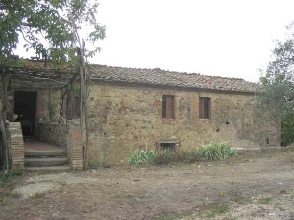
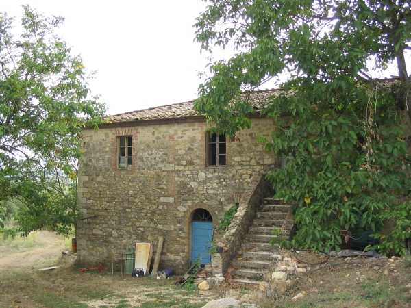
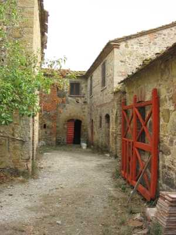
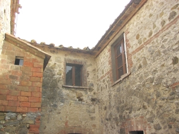
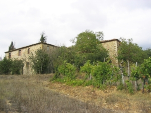

Quercegrossa (Ricordi e memorie)
CAPITOLO I - LUOGHI E PODERI
(CASTAGNOLI)
Cliccami per ritornare all'Indice poderi
Vai all'Indice dei Capitoli
CASTAGNOLI
Podere della fattoria di Passeggeri, in antico era nei confini della parrocchia di S. Stefano alla Ripa, poi di Basciano e infine di Quercegrossa nel 1884. Entrando nel territorio di Passeggeri dal bivio di Macialla, poco dopo il ponte sul Bozzone Castagnoli è il primo podere che si incontra, posizionato sulla destra a mezza collina. Di là dalla strada le rinomate fonti omonime, abbondanti sorgenti d’acqua fresca, rifornimento per tutti i poderi della fattoria.
Il podere Castagnoli visto da est con gli ingressi alle due abitazioni coloniche.
Il podere è un antico fabbricato su due piani più volte rimaneggiato al quale si accede al primo piano, ossia all’abitazione del colono, con un’originale ponte in muratura, trovandosi l’edificio in basso rispetto al piano strada frontale, dove sorge la capanna. Nella parte finale a Sud, l’altra abitazione del secondo contadino alla quale si accede da una breve scala esterna.


L’ultimo importante intervento di ampliamento e restauro è opera del senatore Sarrocchi che edificò tutta la parte di ponente per aumentare la disponibilità dei posti alla numerosa famiglia dei Florindi e costruire i nuovi servizi agricoli.



Nelle foto si nota, sulla parte destra delle prime due l'ampliamento apportato dal senatore Sarrocchi, evidenziato anche dalla differente altezza delle finestre. Nella terza foto spicca il nuovo edificio.
Il toponimo "Castagnioli" è ricordato nel 1319 quando in detto luogo esiste una proprietà di un pezzo di terra lavorata e soda, ma senza riferimento di casa o capanna. Probabilmente l’origine del podere va assegnata a quell’epoca, e forse un ricovero agricolo fece posto all’abitazione del mezzaiolo. A fine Cinquecento, e ancora nel 1611, la proprietà del podere è della famiglia Porcelli che ne sono anche i lavoratori. A metà Seicento subentrano i Guidini e per un breve tempo i Rocchigiani di Siena. Alla morte di Giacinto Rocchigiani il podere passa agli eredi che nella pratica notarile del 1657 viene così stimato: ”Un podere posto nel Comune di Ripa à Quercia grossa, luogo detto i Castagniuoli, che al presente si tiene d’affitto da Cosimo oste al Cappello per scudi venticinque l’anno, ed il medesimo si stima possa valere scudi Secento e più scudi Cento di bestiame”. Ai Rocchigiani seguono, dopo pochi anni i Guglielmi di Siena, proprietari di altre terre alla Ripa, e dopo quasi un altro secolo Castagnoli passa a Giovanni Sansedoni, nobile senese che ne diviene proprietario verso il 1730/40. Il nome Sansedoni resterà per molto tempo rinomato tra i popoli di Basciano che vedranno l’edificazione della villa - fattoria nel 1750, centro di una consistente multiproprietà poderale familiare che si trasmetterà per tutto l’Ottocento, e di questi beni ne fa parte Castagnoli. Da Giovanni Sansedoni il podere passa nel 1837 al figlio Orazio e l’usufrutto alla vedova Anna Schippisi. Dopo soli tre anni Orazio cede il podere alla cugina Teresa, figlia di Ambrogio, coniugata Pucci, e da lei, il 13 marzo 1847, al figlio Alessandro Pucci, che con la morte dell’usufruttuaria sopraddetta, nel 1855 ne diviene l’unico titolare. Egli manterrà la proprietà di Castagnoli per circa trent’anni poi, il 12 ottobre 1882, va a Pallini Roberto del fu Luigi. Dopo Roberto Pallini e la sorella Emma nei Sarrocchi, padrona nel 1903, la trasmissione della proprietà avviene in casa Sarrocchi ed è identica a quella della fattoria di Passeggeri, di cui Castagnoli è entrata a far parte. Podere e pigione per tutto il Seicento, Castagnoli ha un solo contadino nei successivi due secoli per divenire sede di due mezzaioli verso il 1920. Dai tempi di Menico Porcelli, colono ai primi del Seicento numerose famiglie vi si sono alternate, ma nessuna di loro vanta una presenza di una certa rilevanza di tempo, e tra le più longeve appaiono i Fantacci 1707-1724 circa, i Cappannoli 1811-1846 e i Becatti 1857-1869. Nel Novecento si ricordano i Florindi e i Porciatti, sostituiti rispettivamente dagli Innocenti e dai Petri. Il podere detto Castagnoli I comprendeva circa sedici ettari tra coltivato e bosco. Gli Innocenti, nei primi anni, tenevano una stalla di quattordici bestie più una scrofa e quindici pecore. La tribbiatura del grano dava circa 150 ql. annui.
La capanna di Castagnoli posta di fronte agli ingressi del podere.
I castri di Castagnoli.
Quella che era la moderna concimaia di Castagnoli
Il podere di Castagnoli visto dalla strada regionale
Capitolo successivo Castellare
Inizio pagina
Vai all'Indice dei Capitoli
|